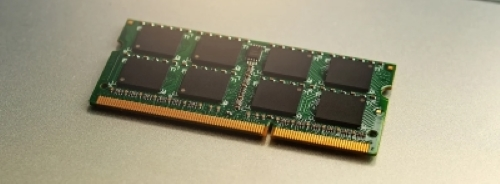

RAM (Random Access Memory)
La RAM è una componente fondamentale della memoria centrale di un computer. Ecco alcune informazioni dettagliate sulla RAM:
- Caratteristiche: La RAM è una memoria volatile, il che significa che perde i dati quando il computer viene spento. Tuttavia, offre un accesso molto veloce ai dati.
- Dimensioni: Le dimensioni della RAM sono misurate in gigabyte (GB) o terabyte (TB) e influiscono sulla capacità del sistema di eseguire più applicazioni contemporaneamente.
- Collegamenti: La RAM è collegata direttamente alla scheda madre del computer. Può essere aggiornata o sostituita per migliorare le prestazioni del sistema.
- Funzionamento: La RAM memorizza temporaneamente i dati in uso dal sistema operativo e dalle applicazioni aperte. È di rapido accesso e contribuisce a migliorare le prestazioni globali del computer.

ROM (Read-Only Memory)
La ROM è un altro tipo di memoria essenziale. Ecco alcune informazioni dettagliate sulla ROM:
- Caratteristiche: A differenza della RAM, la ROM è una memoria non volatile, il che significa che conserva i dati anche quando il computer è spento.
- Dimensioni: La dimensione della ROM può variare. Contiene informazioni essenziali del sistema, come il BIOS (Basic Input/Output System).
- Collegamenti: La ROM è saldata direttamente sulla scheda madre del computer. Alcune parti possono essere programmabili, mentre altre sono fisse.
- Funzionamento: La ROM contiene dati permanenti, inclusi i dettagli di avvio del sistema e le istruzioni di base per l'avvio del computer.

CACHE
La memoria cache è un componente importante per ottimizzare le prestazioni del sistema. Ecco alcune informazioni dettagliate sulla CACHE:
- Caratteristiche: La cache è una memoria ad alta velocità che memorizza copie dei dati frequentemente utilizzati, riducendo i tempi di accesso alla RAM.
- Dimensioni: Le dimensioni della cache possono variare a seconda del tipo di processore. Solitamente è suddivisa in L1, L2 e L3.
- Collegamenti: La cache è incorporata direttamente nel processore (CPU) o può essere presente su una scheda separata.
- Funzionamento: La cache migliora le prestazioni del sistema mantenendo temporaneamente copie dei dati utilizzati di recente, riducendo così il tempo necessario per accedervi.
Vai alla homepage